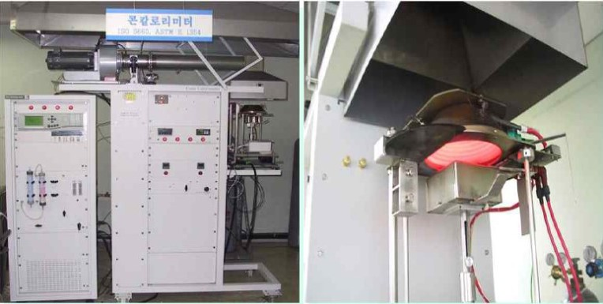

열방출률(Heat Release Rate,HRR)은 화재가 발생했을 경우, 화재의 성장과 전파에 직접적인 영향을 미치기 때문에 화재안전에 매우 중요한 요소입니다.
열방출율 (콘칼로리미터법) 시험방법은 '산소 소모법'으로 측정하는 것입니다.
이 방법은 '순연소열은 연소하는데 필요로 하는 산소의 양에 비례한다'는 점에 기초를 두고 있습니다.
즉, 시험하는 제품이 화재에 노출되는 동안 열방출률에 기여하는 정도를 평가하는 것입니다.
시험제품이 외부 복사열에 노출되었을때 시간에 따른 산소소모를 측정하여 실시간으로 열방출률을 계산하는 것이죠. (※ 열방출률은 산소 1 kg이 소모되면 약 13.1 MJ의 열이 발생하는 기본원리를 이용하여 계산됨)

콘칼로리미터 시험장치
총열방출량(Total Heat Released, THR)은 시험시작시부터 일정시간 또는 종료시까지의 열방출률의 합산으로 계산되며 MJ/㎡로 표기합니다.
[ KS F ISO 5660-1 연소성능시험에 따른 준불연재료 기준 ]
가열시험 개시 후 10분간 총방출열량이 8MJ/㎡ 이하이며, 10분간 최대 열방출률이 10초 이상 연속으로 200kW/㎡를 초과하지 않으며, 10분간 가열 후 시험체를 관통하는 방화상 유해한 균열, 구멍 및 용융(복합자재의 경우 심재가 전부 용융, 소멸되는 것을 포함한다) 등이 없어야 함
준불연 가등급 EPS 단열재 DK보드
건축용 / 외단열용 / 판넬용
문의 1855-2240